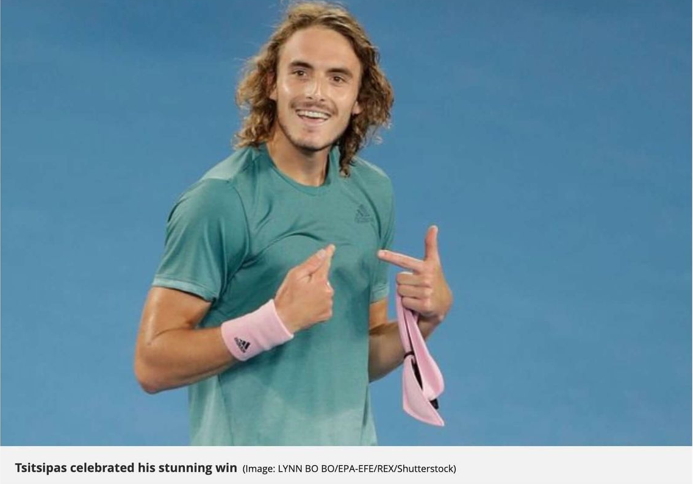

Roger Federer has bowed out of the Australian Open withashock four-set loss to Stefanos Tsitsipas. Federer's chances of winningathird consecutive Australian Open title were ended as the 20-year-old came of age on Rod Laver Arena. The Greek,who was not born when Federer made his professional debut,has rapidly established himself as one of the most exciting up-and-coming talents in the game and backed it up spectacularly with a 6-7 (11)7-6(3)7-5 7-6(5)victory to move through toafirst slam quarter-final. Federer had not lostamatch at Melbourne Park sinceasemi-final defeat by Novak Djokovic in 2016 but his often-brilliant forehand was wayward,especially at the big moments,and he failed to take four set points in the second set which might well have changed the outcome.
 "Roger is alegend of the sport,so much respect for him. He showed such good tennis over the years. I've been idolising him since the age of six. "It wasadream come true just being on Rod Laver facing him. Winning at the end,Icannot describe it." "I had an aggressive mindset from the start,stayed in the moment,got first serves in and tried to press. I didn't lose my patience and that was the key. "Ishowed fighting spirit and had most of the crowd supporting me. Ihaven't seen suchalarge crowd all my life.The atmosphere, the vibes and the energy shown to Roger and me today was indescribable."